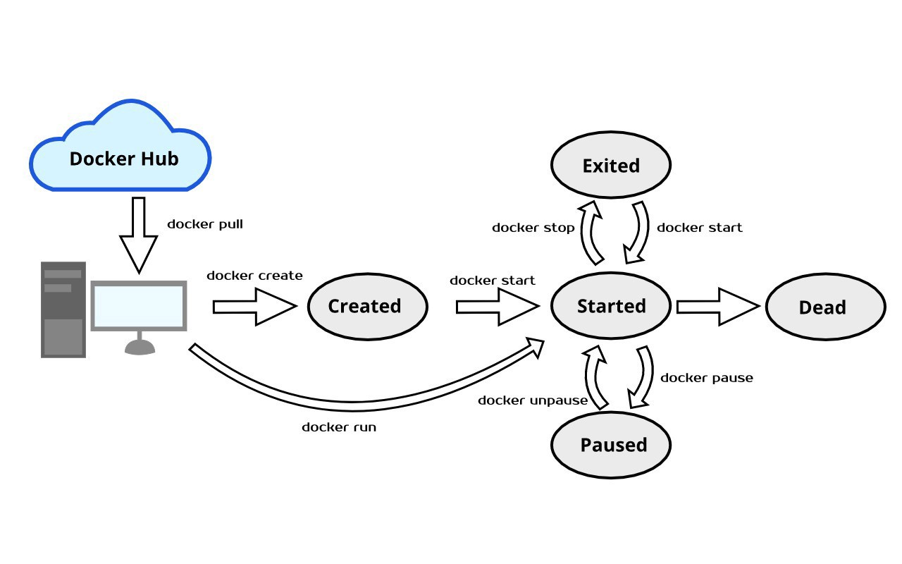
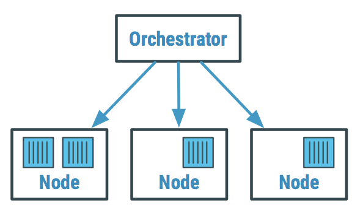

Introduction to Docker
Guillermo Guerrero
Follow me on github:
https://github.com/ryanfox1985
April 29th, 2021
Docker is a tool designed to make it easier to create, deploy, and run applications by using containers. Containers allow a developer to package up an application with all of the parts it needs, such as libraries and other dependencies, and ship it all out as one package.
- Docker community
- Open Source
- Written in Go
- CLI tool and precompiled binaries for Mac, Linux and Windows
Precedent
Wikipedia links:
Linux containers (created 12 years ago)
Docker (created 8 years ago)
WHY CONTAINERS MATTERS?
Virtualization vs containers
BENEFITS OF CONTAINERS
- Isolation
- Ships with your application
- Simplicity
- Lightweight
How does it work?
Basic CLI usage
- `pull/push`
- `push`
- `build`
- `ps`
- `run`
(there are more; these are the basics)
Example
docker run -d --name test-web -p 8080:80 \
-v /home/guillermo/website/:/usr/local/apache2/htdocs/ \
httpd:2.4
echo "Hello World\!" > ~/website/docker.html
Composer/Orchestrators
- Docker Compose
- Docker swarm
- Kubernetes

Offline Import schema
Docker compose
version: '2'
services:
redis:
image: redis:4.0
mailcatcher:
image: schickling/mailcatcher
db:
image: postgres:12
ruby-app:
build:
context: .
dockerfile: Dockerfile_development
environment:
RAILS_ENV: development
DATABASE_URL: postgres://postgres:postgres@db:5432/offline_import_development
links:
- db
- mailcatcher
- redis
volumes:
- ".:/ruby-app"
ports:
- "3000:3000"